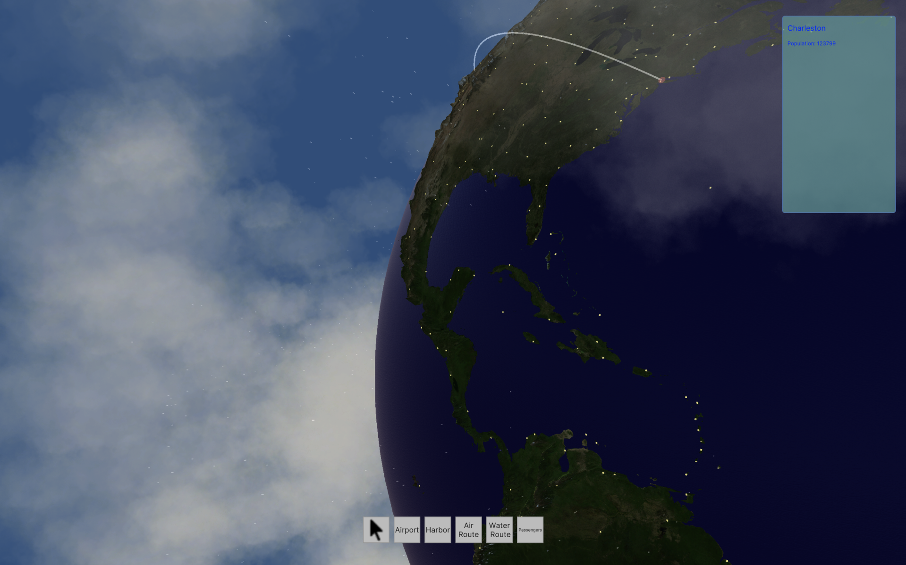

Earth Transport
C#, Unity URP, Open data, Procedural generation
Developed a system for generating terrain features (countries, cities, forestry) by processing serialized
real-world open data using a third-party Delaunay triangulation library.
I also implemented a system for reading serialized weather data to dynamically enhance visual
realism.
The project features a custom camera controller that rotates around the planet, built to support
simple transport tycoon-style gameplay on top of the generated world.
This is the oldest project and I would like to make newer version using the experience I gained using compute shaders during my thesis to create more detailed world with faster generation speed and expand on the gameplay.
This is the oldest project and I would like to make newer version using the experience I gained using compute shaders during my thesis to create more detailed world with faster generation speed and expand on the gameplay.
Info for countries and cities

Rain and clouds appear based on rain accumulation and cloud coverage data